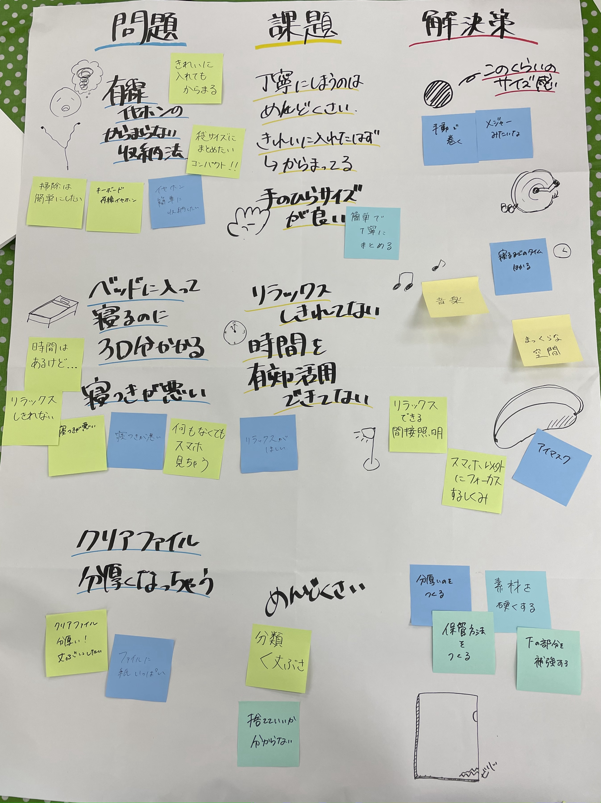
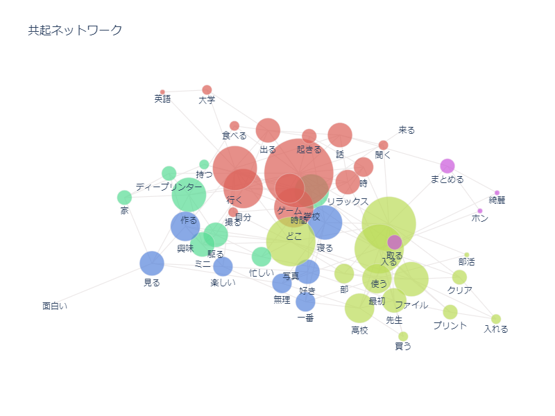
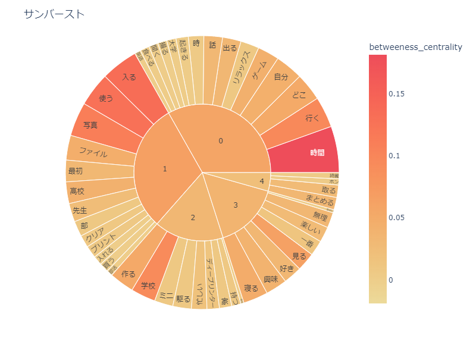
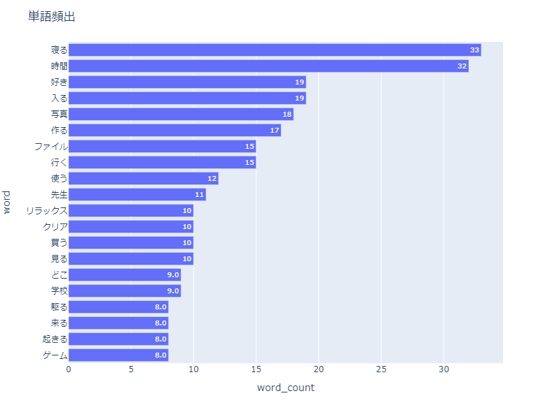

鎌倉プロジェクト
インタビューの実践
場所：鎌倉市役所
参加者：鎌倉市民の方（私たちのグループは高校生の方）

問題↓
1.有線のイヤホンケーブルが絡まる
課題→綺麗にしまったはずなのに絡まっている、丁寧にしまうのはめんどくさい、手のひらサイズにおさまりたい
解決策→メジャーみたいな感じ、丁寧＝手動で巻く？
2.ベッドに入ってから入眠するまで30分かかる
課題→リラックスしきれていない、時間を有効活用できていない
解決策→リラックスできるような環境を作る（間接照明、真っ暗な空間、音楽）、アイマスク、スマホに意識が行かないようにする
3.クリアファイルがいっぱいプリントを入れると分厚くなってしまう
課題→プリントの分類がめんどくさい、どれが捨てていいものなのかがわからない、重要なのは：分類ができる＜丈夫さ
解決策→素材が分厚いもの・硬いものにする、保管の方法を作る、下の部分を補強する
インタビューの分析


